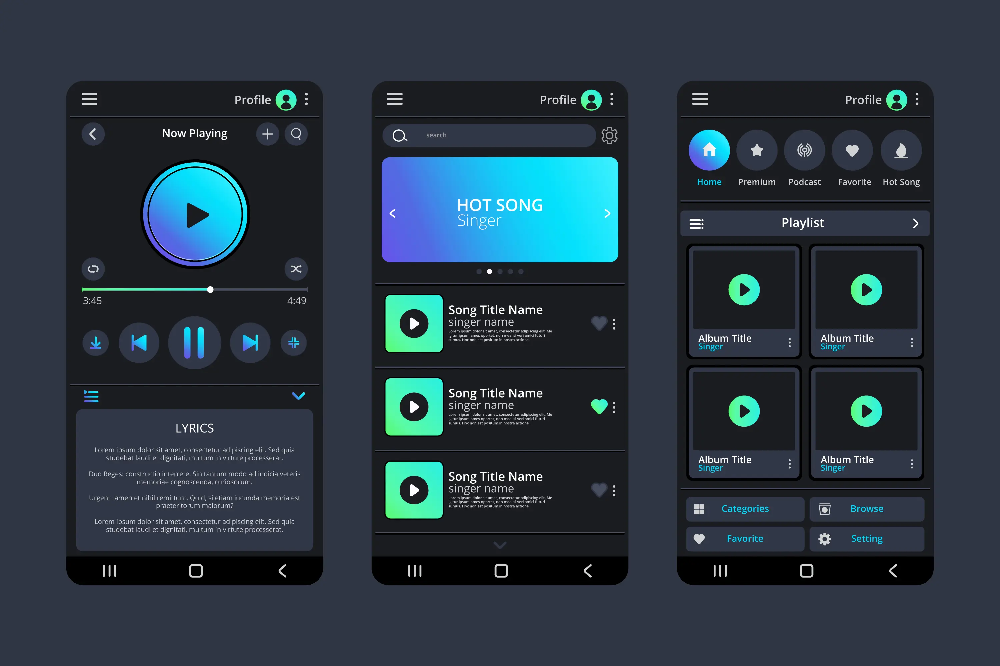

Spotify Premium Features: Why It’s Worth Every Rupee
Let’s be honest — everyone loves music. Whether you’re stuck in traffic, finishing your gym set, or pretending to work while secretly vibing to your playlist, music makes life better. But if you’ve ever used the free version of Spotify, you already know how those ads sneak in right when your favorite song is about to drop. That’s exactly when Spotify Premium walks in like a hero with noise-canceling headphones.
Now, let’s answer the question right away: What makes Spotify Premium so special? In simple words, it removes all the annoying stuff — no ads, unlimited skips, offline music, and the kind of sound quality that makes you feel like the singer is performing in your room. But that’s just the start. Spotify Premium APK isn’t just about skipping ads; it’s about giving your ears the royal treatment they deserve.
Ad-Free Music That Actually Feels Peaceful
Ads have a strange talent — they always appear when your mood is perfect. Just when you’re lost in a song, some random voice yells, “Try this toothpaste!” That’s when Spotify Premium saves your sanity. The ad-free experience is like switching from a crowded bus to a comfy car. You just sit back and enjoy your tracks without interruptions.
It might sound like a small thing, but when you listen daily, ad-free music feels like fresh air. You can play your morning playlist without being sold another shampoo. It’s calm, clean, and peaceful. Once you get used to that, going back to free Spotify feels like punishment.
Download and Listen Offline — Perfect for Bad Internet Days
We all know the pain of bad Wi-Fi. You hit play, and the song buffers right when the beat drops. With Spotify Premium, that problem disappears. You can download your favorite songs, albums, or even podcasts and listen without the internet.
Think of those moments when you’re on a long bus ride, at the gym, or somewhere with zero signals. Offline mode turns your phone into a mini music vault. You don’t need to rely on mobile data or hunt for free Wi-Fi anymore. You just press play, and the beat flows, smooth as butter.
Plus, downloading music doesn’t even take long — a few minutes, and your playlist is ready to roll anywhere, anytime.
Unlimited Skips — Because Not Every Song Hits Right Away
We all have that one playlist where every third song feels like it was added by someone else. On free Spotify, you’re stuck — no skip left, and now you’re listening to a random tune you didn’t even like. Spotify Premium fixes that with unlimited skips. You can move past any track that doesn’t match your vibe.
This feature might sound simple, but it’s pure freedom. You’re always in control. You can go from sad songs to party mode without waiting for Spotify to decide. It’s like driving your own playlist instead of being a passenger.
Superior Sound Quality That Actually Feels Alive
Let’s talk sound. Spotify Premium offers high-quality audio streaming that makes every beat sharper and every note clearer. If you’ve ever switched between the free and premium versions, you’ll instantly notice the difference. The free one feels like your music is trapped in a box, while Premium makes it wide and open.
This isn’t just for audiophiles. Even if you’re listening through normal earphones, the sound feels richer and deeper. The bass hits right, the vocals stand out, and the instruments feel real. Whether you’re blasting songs at full volume or relaxing with lo-fi beats, the sound quality adds a whole new experience.
Personalized Playlists That Actually Understand You
Spotify’s biggest charm is how well it knows your music taste. But Spotify Premium makes this magic even better. With features like Discover Weekly, Daily Mixes, and Release Radar, it builds playlists that match your mood, your taste, and even your daily routine.
Over time, it gets smarter. It notices that you listen to calm songs in the morning and fast beats in the evening. It starts suggesting tracks that fit your mood before you even search for them. It’s like having a personal DJ who somehow reads your mind — minus the weirdness.
The more you use it, the more personal it becomes. You’ll discover new artists that match your vibe perfectly. And when that happens, you’ll wonder how you ever lived without it.
Connect Across All Devices — From Phone to Laptop to TV
Spotify Premium isn’t limited to your phone. You can connect it to your laptop, tablet, smart TV, or even your car. The sync is smooth and automatic. You can start a song on your phone, then continue it on your computer without missing a beat.
This feature comes in handy during parties or movie nights. Imagine switching your music from your phone to your speaker instantly. No cables, no setup — just music following you wherever you go. It feels natural and effortless.
And yes, you can even use Spotify Connect to control one device from another. Want to change the song from your couch without getting up? Done. Lazy music control at its finest.
Family, Student, and Duo Plans That Actually Make Sense
One of the best things about Spotify Premium is that it’s not just for individuals. They offer flexible plans that suit everyone. If you live with family, you can get the Family Plan, which allows multiple users under one subscription. Everyone gets their own account, playlists, and recommendations — no sharing issues.
Students get a special discount, which makes Premium super affordable. And if you’re living with a partner or friend, the Duo Plan gives both of you separate accounts at a cheaper rate. It’s smart, fair, and budget-friendly.
It’s rare to find a subscription that feels this fair, especially when you consider the quality of the service you’re getting. Spotify clearly understands that music isn’t just personal — it’s social too.
Early Access and Exclusive Content for Premium Users
Spotify sometimes drops exclusive tracks, podcasts, or special content only for Premium users. This means you can get new music before everyone else. It’s not something they brag about too much, but it’s a quiet perk that fans really appreciate.
You also get access to features like crossfade and queue control, which make your listening experience smoother. You can blend songs without sudden stops or customize how your playlist flows. It’s those small touches that make the experience feel complete.
Smooth App Performance and No Disruptions
Free apps are often filled with pop-ups, ads, and limited access. Spotify Premium feels clean and fast. You open it, tap play, and you’re in. No interruptions, no waiting. The interface feels more responsive because it doesn’t have to load ad elements in between.
Even when switching between devices, the playback remains smooth. You can pause on one and continue on another instantly. It’s reliable, which is rare in most streaming apps.
Why Spotify Premium is Worth It
If you think about how much time people spend listening to music daily, it’s clear that Premium is not just a luxury — it’s a small upgrade that changes the entire experience. For the price of a coffee or two, you get unlimited, high-quality, and ad-free music that travels with you anywhere.
It makes your daily routine more enjoyable. Morning walks feel lighter, work feels faster, and evenings feel calmer. It’s not about the cost; it’s about the comfort it brings. Once you switch to Premium, you realize how much those small interruptions were ruining your mood.
Music has always been a big part of human life — and Spotify Premium simply makes that experience smoother, cleaner, and richer. It’s the kind of service you don’t think much about until you stop using it. Then, suddenly, you miss it like an old friend who always knew what song to play next.
Final Thoughts
Spotify Premium doesn’t try too hard to impress — it just works. It gives you everything you need for a perfect listening experience without overcomplicating things. You open it, press play, and enjoy. That’s it.
It’s built for everyone — casual listeners, gym lovers, students, professionals, and even that one person who listens to sad songs while smiling. Whether you’re at home, on the road, or somewhere in between, Spotify Premium keeps your world filled with rhythm.
So, if you’re tired of ads, buffering, or bad sound, it might be time to treat yourself. Because once you get used to Premium, there’s no going back — and honestly, why would you?